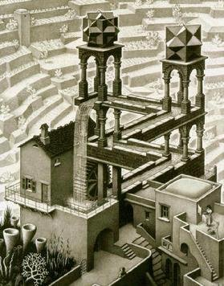

Waterfall
M. C. Escher · 1961 · Lithograph · 38 × 30 cm
In copyright. Look and learn: shown for study, not for download.
This lithograph was first printed in October 1961. The watercourse is built from three Penrose triangles, an impossible object designed by Oscar Reutersvärd in 1934 and found independently by Roger Penrose in 1958. The giant plants below the mill are a magnified view of a cluster of moss and lichen that Escher had drawn in ink in 1942. In his notes on the picture he pointed out that some water must be added now and then to make up for evaporation.